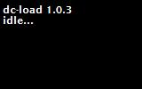

| 1. Préparation de la liaison |
Ce chapitre traite de la préparation de la Dreamcast et du PC pour établir la liaison.
1) Relier la Dreamcast au PC
Pour pouvoir communiquer avec la Dreamcast il faut relier la console à votre ordinateur.
Les moyens de connexion sont nombreux : Vous pouvez communiquer avec le Coders Cable, cable série standard qui se branche sur un port COM, un Broadband Adapter (Réf. HIT-400), qui est un modem Haut débit se branchant à la place du modem standard de la Dreamcast ou encore un LAN Adapter (Ref. HIT-300), qui semblable au Broadband Adapter, se branche au même endroit ; cependant, il est expérimental car il est nécessaire d'appliquer le patch de Dan Potter pour l'utiliser.
Cependant, une version de DC-LOAD-IP v1.0.4 supportant le LAN Adapter est apparue, et comme je ne possède ni de LAN Adapter, ni cette version (à l'heure ou j'écris ces lignes), je ne peux pas vous en dire plus.
Récapitulatif des moyens possible de connexion :
Pour pouvoir utiliser les adapteurs haut débit, vous devez posséder une carte Ethernet, et un cable croisé RJ-45. Pour le cable série, aucune contrainte (enfin si, un port COM!).
Le principal avantage des connexions haut débit est que le débit est extrèment plus supérieur à celui du Coders Cable (rapport très grand!). Mais ce genre de connexion est très chère, difficile à trouver et à mettre en oeuvre (il faut une carte Ethernet, un BBA à + de 100€, et un bon cable croisé). Et également... pas très utile.
La solution recommandée est le Coders Cable, il est largement suffisant. Vous pouvez en plus vous en procurer un pour à peine 44€ (comme le mien, sur FL-Games) ou alors d'autres sites, comme Lik-Sang.com, propose ce cable à 25€. C'est le seul investissement à faire.
D'autres sites vous propose de construire le Coders Cable, mais ce n'est pas très avantageux. Vous pouvez presque en acheter un tout fait pour pas plus cher. Vous pouvez chercher sur Google pour en savoir plus.
2) Le CD-ROM d'initialisation
DC-TOOL GUI ne s'utilise pas tout seul. En effet, il permet seulement le pilotage de la Dreamcast, et est à lancer sur le PC. Pour la Dreamcast, pour lui faire comprendre les ordres que vous lui donnez, il faut lancer un CD-ROM : DC-LOAD. C'est avec lui que DC-TOOL va dialoguer, afin de pouvoir faire ce que vous voulez.
Tout d'abord, sachez que pour communiquer avec le Coders Cable et avec le Broadband Adapter (BBA), les CD-ROM (tout comme les DC-TOOL) sont différents.
Avant l'arrivée de DC-TOOL GUI, il existait donc un DC-LOAD & DC-TOOL pour la version Coders Cable (Série) et un DC-LOAD-IP et DC-TOOL-IP pour la version Haut débit.
Voici un tableau récapitulatif :
Vous possédez :
Les CD-ROM d'initialisation sont disponibles dans ce package. Ils sont également disponible sur le site de ADK/Napalm. Finalement, grâce à DC-TOOL GUI, les DC-TOOL & DC-TOOL-IP originaux sont communs ! En revanche, les DC-LOAD & DC-LOAD-IP sont différents.
Note importante : Vous devez posséder le même numéro de version SI POSSIBLE pour DC-LOAD & DC-TOOL (ou DC-LOAD-IP & DC-TOOL-IP). La version actuelle est la version v1.0.3. Vous ne trouverez surement que cette version sur internet. Sachez que DC-TOOL GUI pilote le DC-TOOL v1.0.3. Il vous faut donc un DC-LOAD v1.0.3. Cependant il existe une version de DC-LOAD-IP v1.0.4 qui supporte le LAN adapter. Vous pouvez normalement l'utiliser avec le DC-TOOL-IP v1.0.3, donc avec DC-TOOL GUI.
Vous pouvez malgré tout changer le programme DC-TOOL (non recommandé). Consultez le chapitre Location des programmes vitaux pour plus d'informations.
3) Graver le CD-ROM d'initialisation
Le CD-ROM est disponible sous plusieurs format d'image CD. Ceux qui sont inclus dans ce package sont sous la forme Padus DiscJuggler (Image CDI). Vous pouvez les graver avec Alcohol également.
Des images Nero Burning Rom sont également disponibles. Mais ce format n'est pas recommandé du fait de l'incompatibilité entre la version v5.5 (la bonne version) et la v6.0. Vous pouvez malgré tout en trouver un peu partout sous ce format.
La seule contrainte lors de la gravure d'image est la vitesse de gravure : Vous devez la limiter à 4x car sinon la Dreamcast aura du mal à lire le CD-ROM (du moins à le démarrer). Du moins, essayez de la limiter le plus possible.
4) Préparation à la liaison
a) Après avoir gravé votre
CD-ROM DC-LOAD (ou DC-LOAD-IP) insérez-le dans la console.
b) Branchez votre Coders Cable ou votre
adapteur Haut débit à la
Dreamcast.
c) Allumez la console.
d) Si votre CD est bien gravé, vous devez arriver à un écran
comme le suivant :

Votre connexion est prête à être testée. Si c'est la première fois que vous lancez le logiciel, vous devrez d'abord configurer le programme DC-TOOL GUI.